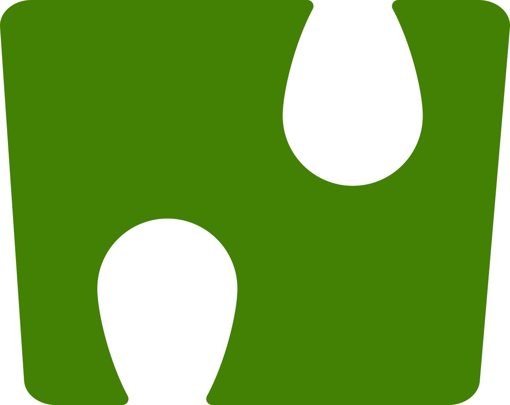

Поиск плат NAPI в сети, SSH и консоль UART.
«Искать»: платы с сервисом napi-avahi. «Сырой поиск»: всё, что отвечает на порту 22, с признаками NAPI (для плат без napi-avahi). «Консоль»: UART платы через USB-переходник, 1500000 8N1, выход Ctrl+]. napiconfig, SSH, influxdb, grafana, donoff: выбранная в таблице плата.
Чтобы плата находилась кнопкой «Искать», на ней должен стоять сервис napi-avahi: apt install napi-avahi из репозитория napilab: repo.napilab.ru. Исходники и подключение репозитория: github.com/lab240/napi-avahi. Свежая версия программы: github.com/lab240/napi-avahi/releases.
apt install napi-avahi